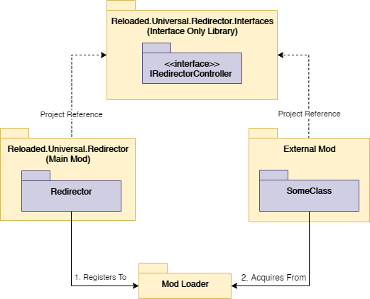

Introduction
Sometimes you might want to check the state of another mod or or instruct it to perform a certain action. Reloaded-II provides two mechanisms for what it considers "Inter Mod Communication", dubbed "Plugins and Controllers".
Plugins allow you to extend the functionality of other mods by implementing interfaces defined by them inside your mod. The mod loader API searches, creates and returns new instances of classes implementing a specific interface from other mods. In other words, plugins do not share state.
Controllers allow you to directly interact with other loaded mods. Individual mods can submit shared instances of interfaces to the mod loader, which can then be obtained by other mods. Controllers share state.
How Does it Work?
Implemented using interfaces, the concept is that the mod loader acts as a middleman between mods. This middleman allows mods to communicate by passing implementations of interfaces between each other.
This may be illustrated by the following diagram:

An example of an external mod communicating with the Universal File Redirector.
- During initialization, Mod A (Redirector) publishes an interface to the Mod Loader.
- During initialization, Mod B (Other Mod) asks the mod loader for the interface.
Communication with the Mod Loader is performed using the IModLoader interface, available at your mod's entry point.
About Controllers And Plugins
Instantiation
In order to be able to consume a Plugin or Controller from another mod, you must first set that mod's id as either a required or optional dependency.
This is a safeguard in order to ensure that unintended libraries do not get unified between otherwise isolated mod instances.
Required Dependencies
(ModDependencies in ModConfig.json)
Reloaded-II re-sorts the order at which the mods are loaded on launch, guaranteeing that any required dependency of your mod will be loaded before your mod. As such, you are free to obtain Controllers and/or Plugins immediately in the entry point of your mod.
IController _controller;
void Start(IModLoaderV1 loader)
{
_controller = loader.GetController<IController>();
}
Optional Dependencies
(OptionalDependencies in ModConfig.json)
If the mod is an optional dependency, then the preferred option is to acquire Controllers/Plugins after the mod loader has finished initializing (all mods are loaded).
To do this, simply subscribe to IModLoader's OnModLoaderInitialized, and try to obtain an interface instance at that point.
IModLoader _loader;
WeakReference<IController> _controller;
void Start(IModLoaderV1 loader)
{
_loader = (IModLoader)loader;
_loader.OnModLoaderInitialized += Initialized;
}
// Called by the mod loader after all mods finished loading.
void Initialized()
{
_controller = _loader.GetController<IController>();
}
Unlike required dependencies, the mod loader does not take load order into account with optional dependencies.
Number of Instances
Plugins are considered a 0 - * relationship, whereby a request for plugins which inherit from a specific interface may return anywhere between 0 to many plugins originating from various different mods.
Controllers are however considered a 0 - 1 relationship. Only one instance of a specific interface maximum can be registered at once into the mod loader at once (this simplifies the API).
Disposal
Some Reloaded Mod Loader mods support live unloading from a running application. However this poses a problem. If interfaces from a mod about to be unloaded is used by another mod, the mod cannot be fully unloaded.
Reloaded aims to alleviate this problem by returning both Plugins and Controllers as Weak References, i.e. instances of the WeakReference<T> class, and holding the actual strong references to the Plugins/Controllers themselves.
This means that when mods are unloaded from the process, the mod loader can dispose of them without the need of mod developers having manually doing so.
Rules (Simplified)
Storing Controllers
✅ Storing Weak References on the Heap is OK
WeakReference<IController> _reference;
void AcquireController()
{
_reference = _loader.GetController<IController>();
}
✅ Storing referenced objects on the Stack is OK
void AcquireController()
{
IController controller = _loader.GetController<IController>().Target;
// controller is no longer referenced outside of the scope of the method.
}
❌ Storing referenced objects on the Heap is NOT OK.
IController _controller;
void AcquireController()
{
_controller = _loader.GetController<IController>().Target;
// This prevents the mod loader from being unable to dispose the controller.
}
Using Controllers
✅ Always check the controller is valid and hasn't been disposed before usage.
void DoSomethingWithController()
{
if (_controller != null &&
_controller.TryGetTarget(out var controller))
{
// Do something with controller
}
}
Using Plugins
Instantiating
Acquiring new instances of Plugins is performed through the use of the MakeInterfaces method.
// _loader is an instance of IModLoader
var interfaces = _loader.MakeInterfaces<ISharedInterface>();
Using Controllers
Acquiring
To acquire a controller that has been submitted from another mod, simply ask the mod loader.
WeakReference<Controller> _controller;
void GetController()
{
_controller = _loader.GetController<IController>();
}
Disposing
While the mod loader is capable of automatically disposing your controllers when your mod is unloaded, it should still be noted that it is possible to dispose and/or replace these manually with the RemoveController method.
void Unload()
{
_loader.RemoveController<IController>();
}
You may force a Garbage Collection with GC.Collect() to ensure other mods no longer have access to/acquire a new controller should you ever remove or override an existing controller.
Sharing Interfaces
If you are developing a mod which will share interfaces to be used by other mods, you must first share the interface with the mod loader.
This is done by inheriting the interface IExports (from Reloaded.Mod.Interfaces) in your main mod, with single method GetTypes which should return an array of interfaces to be consumed by other mods.
Example:
public class Exports : IExports
{
public Type[] GetTypes() => new[] { typeof(IController) };
}
Sharing forces other mods to load the same instance of the DLL containing the shared interfaces, regardless of whether the version is newer or older.
If you do not do this, MakeInterfaces and GetController will not work for other mods.
Registering Controllers
For controllers an additional step is required. During initialization (Start()), you need to register it with the mod loader. Simply use the AddOrReplaceController method of IModLoader.
Controller _controller;
_controller = new Controller(); // Implements IController
_loader.AddOrReplaceController<IController>(this, _controller);
Recommendations & Limitations
Interface DLLs are Immutable
Once a DLL containing interfaces has been loaded into the process, it cannot be unloaded.
e.g. If you recompile SomeMod.Interfaces, it cannot be swapped out without restarting the application/process.
This is unfortunately a limitation of .NET Core, as DLLs cannot be unloaded from AssemblyLoadContext(s), only whole load contexts.
Note: This does not mean mods using the interface DLLs cannot be unloaded. Said mods can be loaded and unloaded during runtime as usual without any problems.
Keep all your Interfaces in a separate library
Anyone using your interfaces will need to reference them from the project which contains the definitions.
This means that if you store your interfaces in the same DLL as your main mod, others would need to reference your mod. Anyone using your interfaces will have your entire mod compiled and copied to their output! (Not good!)
Therefore it is recommended that you make a separate library for storing only your shared interfaces. Both the main mod, and other mods using your Controllers/Plugins should reference that same library.
Ideally interface libraries should be 4-10KB and contain no external references (single DLL).
Upgrading Interfaces used with Controllers/Plugins
Changes to existing interfaces will break mods using the interfaces. This should be fairly obvious to anyone who has used a plugin or a plugin-like system before.
If you want to add more functionality to existing interfaces, either make a new interface or extend the current interface via inheritance. After being published (Mod Released), interfaces should never change (this includes method names).
Here is an example of the recommended setup:
// Recommended setup using inheritance.
// User can acquire `IController` and have the latest version known at compile time.
interface IController : IControllerV3 { /* Dummy */ }
interface IControllerV3 : IControllerV2 { void DoZ(); }
interface IControllerV2 : IControllerV1 { void DoY(); }
interface IControllerV1 { void DoX(); }
Example Mods
The following examples contain mods that export interfaces to be used by other mods.
Universal Mods
Shared Libraries
Game Specific
- Sonic Heroes Controller Hook (Allows other mods to receive/send game inputs.)
Interfaces are available within the projects whose names end on .Interfaces, e.g. Reloaded.Universal.Redirector.Interfaces.